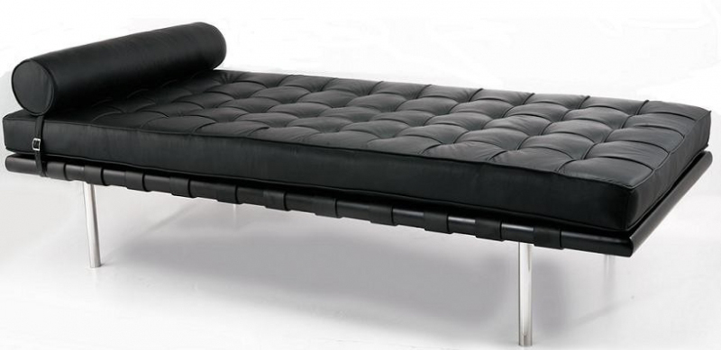
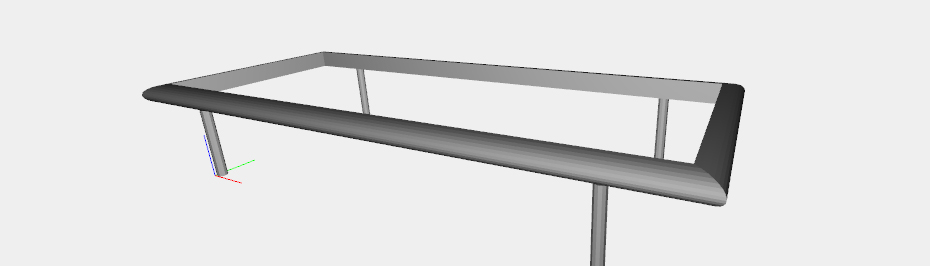
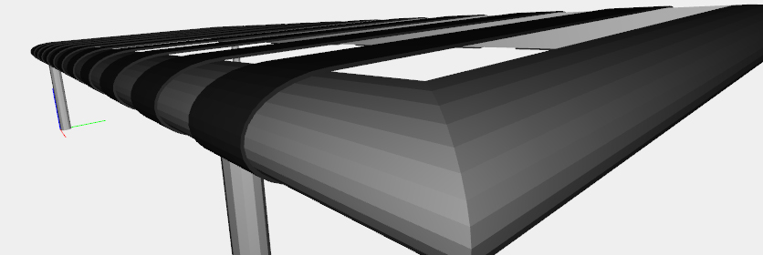
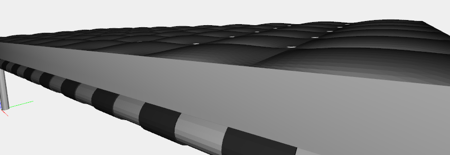
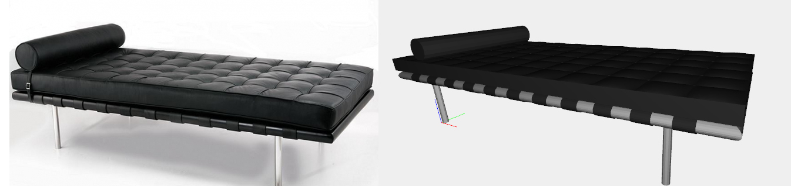

Barcelona Day Bed
Description
Designed in 1930, the Barcelona Couch shares the same simple elegance as the iconic lounge chair of the same name. Mies van der Rohe's command of line and material in all medium, from architecture to furniture, helped define the modern vocabulary.
Legs
Barcelona Day Bed legs are four CYLINDER(0.11, 1.57)([12, 1]) properly translated. The base is obtained drawing the vertical points of the insider edges and the points of the curves of the external edges. Then through series of bs2() are created the base surfaces.
Ropes
In order to create the ropes, we can draw the points of the side surface of the first rope, of height 0.03, Bezier-map them through bs2() and then EXTRUDE([0.5]). Then the rope is replicated 11 times and translated properly.
Mattress
The main mattress is a CUBOID([12.27, 5.25, 0.45]). The stuffed square on the top of the mattress are created Bezier-mapping three sequences of points: two for the edges and the middle one that will be approximated. This is made by the special function bs3() that create the surface by three sequences of points. Then the stuffed square is replicated in the two dimensions to fill the mattress surface. The pillow buttons are simplest CYLINDER(0.04, 0.01)([12, 1]), replicated and translated properly between the stuffed squares.
Complete model
In the end has been added a cylindrical pillow. Everything is structed and mattress, pillow and buttons colored properly. The result of the function barcelona_day_bed() is a good Plasm.js 3D model of the Mies van der Rohe's Barcelona Day Bed.
Sources: knoll.com